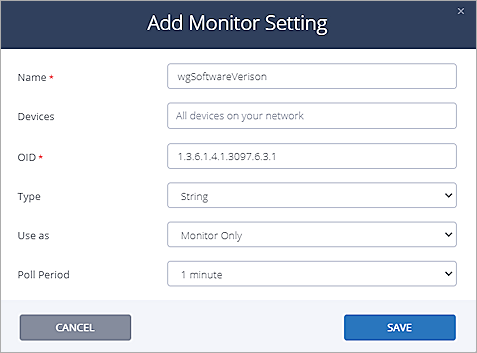

Auvik is an RMM (Remote Monitoring and Management) tool used by MSPs (Management Service Providers) for asset management. RMM agents are installed on MSP customer endpoints to discover, monitor, and manage IT assets. Auvik can discover WatchGuard devices and use authentication credentials to access specific device information such as subscription status, renewal date, hardware model, and other device properties.
This document describes how to use Auvik to discover and monitor a WatchGuard Firebox.
Platform and Software
The hardware and software used to complete the steps in this document include:
- Firebox with Fireware v12.7.1 or higher
- Auvik Cloud
- Auvik Collector
This diagram outlines the topology used for this integration:
Set Up the Firebox
SNMP Settings
You must configure SNMP settings on the WatchGuard Firebox before you can use Auvik to discover the Firebox.
- Log in to Fireware Web UI (https://<your firebox IP address>:8080).
- Select System > SNMP.
- If necessary, click the lock
 to make changes.
to make changes. - From the Version drop-down list, select v3.
- In the User Name text box, type WatchGuard.
- From the Authentication Protocol drop-down list, select SHA1.
- In the Password and Confirm text boxes, type the authentication password.
- From the Privacy Protocol drop-down list, select DES.
- In the Passwordand Confirm text boxes, type the encryption password.
- Click Save.
- Select Firewall > Firewall Policies.
- Click Add Policy.
- From the Packet Filter drop-down list, select SNMP.
- Click Add Policy.
- Configure the SNMP packet filter policy to allow traffic from Any-Trusted to Firebox. If you connect to an optional interface, specify Any-Optional instead of Any-Trusted.
- Click Save.
The SNMP policy should open with these properties:
SSH Settings
You must configure SSH settings on the WatchGuard Firebox before you can manage the Firebox with Auvik.
- Select Firewall > Firewall Policies.
- Click Add Policy.
- Select Custom .
- Next to the Select a policy type drop-down list, click Add.
- In the Name and Description text boxes, type the name and description.
- From the Protocols section, click Add.
- From the Type drop-down list, select Single Port.
- From the Protocol drop-down list, select TCP.
- In the Server Port text box, type 4118.
- Click OK.
- Click Save.
- Click Add Policy.
- Edit the policy to allow traffic from Any Trusted to Firebox. If you connect to an optional interface, specify Any-Optional instead of Any-Trusted.
- Click Save. The SSH policy should open with these properties:
- If necessary, click the lock
 to prevent further changes.
to prevent further changes.
Set Up Auvik
Install Auvik Collector
- Log in to Auvik Cloud.
- Select Navigation > All Sites.
- Click Add Site.
- In the Add Site page, from the Relationship Type drop-down list, select Site.
- In the Organization Name text box, type the organization name.
- In the Desired URL text box, type the desired URL.
- Click Next.
- Select All users.
- Click Save.
- Click the WGCDCECO organization name.
- Select the Auvik Collector to download from the options, then follow the detailed installation instructions to install the Auvik Collector on the proper computer. This computer must be on a LAN that is connected to the WatchGuard Firebox.
- After the Auvik Collector is installed and successfully connection to Auvik Cloud, the Auvik Collector status is online on the All Sites page.
SNMP Credential Settings
- Select Admin > Discovery > Manage Credentials > SNMP Credentials.
- Click Add SNMP Credentials.
- In the Description text box, type the description for the SNMP credentials.
- From the Version drop-down list, select Version 3.
- In the Username text box, type the user name WatchGuard.
- From the Auth Protocol drop-down list, select SHA.
- In the Auth Passphrase text box, type the auth passphrase.
- From the Privacy Protocol drop-down list, select DES.
- In the Privacy Passphrase text boxes, type the privacy passphrase.
- Click Save.
SSH Global Settings
- Select Admin > Discovery > Discovery Settings > Service Settings > SSH.
- From the Use Default Ports drop-down list, select No - Custom Ports.
- In the Port text box, type 4118.
- Click Save.
SSH Credential Settings
- Select Admin > Discovery > Manage Credentials > Login Credentials.
- Click Add Login Credentials.
- In the Description text box, type the description for the SSH credentials.
- From the Connect Using drop-down list, select Telnet or SSH.
- In the Username text box, type the user name admin (this is WatchGuard Firebox default admin user name).
- In the Password text box, type the password.
- In the CLI Enable Password text box, type the password.
- Click Save.
Add SNMP Monitor
- Select Admin > Discovery > Discovery Settings > Monitor Settings.
- Click Add Monitor Setting.
- In the Name text box, type the monitor name.
- In the OID text box, type 1.3.6.1.4.1.3097.6.3.1. This is the WatchGuard Fireware version OID.
- From the Type drop-down list, select String.
- From the Use as drop-down list, select Monitor Only.
- From the Poll Period drop-down list, select 1 minute.

- Click Save.
Test the Firebox and Auvik Integration
- Log in to Auvik Cloud.
- Select All Sites.
- Click the WGCDCECO organization name.
- The topology discovered by Auvik opens.
- Click WatchGuard-XTM in the topology to see detailed information about this device.
- Select Navigation > Debug > All OID Monitors.
The Firebox Fireware versions open.
- Select Navigation > Documentation > Configurations, then click the discovered WatchGuard-XTM device.
- In the WatchGuard -XTM page, select Documentation > Configurations.
- You will see all configurations that were previously backed up.
- Select Manage Configuration > Export to export the selected configuration.
The Auvik Restore button is not operational for WatchGuard products at this time. To restore these devices, export the configuration from Auvik, change the file extension to .xml, and import the file with the Fireware Web UI.